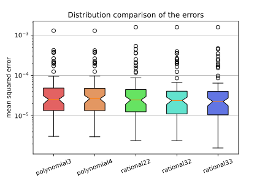

So far we always considered the $f$ function in our system to be a polynomial:
$$\mathbf{x}_{t+1} = f(\mathbf{x}_t) \quad \text{ or } \quad \dot{\mathbf{x}} = f(\mathbf{x})$$Where $\mathbf{x}$ is the state of the system.
The very natural question that arises from this approach is whether polynomials are adapted to learn the dynamics from the data. It seems that so far, our problem was not that the polynomials did not fit the data but rather that they did not learn the patterns that we wanted them to learn.
In this post we will explore what happens when we use different functions for the very simple case where we just identify the dynamics of the cumulative cases in a single country.
So far we used the original approach as described in the paper [1] where the candidate functions depend only on the state. The coefficients for each of these functions are linear with respect to the loss thus allowing for a linear least squares fitting. If we want to add more elaborate functions we need to use coefficients that are non linear with respect to the loss and use non-linear least squares instead.
In order to keep this work simple and exploratory we will begin by considering rational functions. We would have $f(x) = \frac{p(x)}{q(x)}$ where $p$ and $q$ are polynomials. We now have a very simple curve-fitting problem that we can solve using scipy.optimize's curve_fit method.
For the sake of simplicity we limit the maximum degree of the polynomials to 3:
$$f(x) = \frac{a + b x + c x^2 + d x^3}{1 + e x + f x^2 + g x^3}$$Where $a, b, c, d, e, f, g$ are the parameters that we will optimize. In the experiment we also use a rational function with a polynomial of a maximum degree of 3 in the numerator and 2 in the denominator and another with 2 for the denominator and 2 for the numerator.
To summarize: we fit all the countries with three new functions that are three rationals functions with maximum degrees of $(2, 2), (3, 2), (3, 3)$ where the first value is the maximum degree of the numerator and the second is the maximum degree of the denominator. For comparison, we add two polynomial functions of third and fourth degree.
Here we have the plots for all the countries that we have fitted. The upper plot shows the derivative of the state $\dot{\mathbf{x}}$ with respect to the state $\mathbf{x}$ and represents the actual function that we are fitting. The bottom plot shows the integration of the same functions which allows us to compare their results. The number of cases in all countries was normalized so that we don't work with big numbers, this makes the fitting easier. The integrated trajectories are unsynchronized and might have different initial conditions.
When comparing the errors between the fitting of the different functions we do not see any big advantage for any of the functions. The plot below shows the distribution of the mean squared error of the different functions that we fit. We can notice that the rational33 might have a slight advantage over the other functions but it might be due to it's ability to closely fit one particular outlier, more precisely about this in the next paragraph.

From the individual plots of the different countries we can notice that the rational functions have the tendency to closely fit some outlier in the data. I am not sure why that happens but this is not a very desirable thing for us. Examples of such behaviour can be seen in France, Romania, Panama, North Macedonia, Nigeria and many others.
What is interesting is that in some cases (for example Bulgaria, Dominican Republic, Kazakhstan), even if the spike is quite big, it has a very limited impact on the integrated trajectory whereas in some other cases the the trajectory no longer makes sense (for example France, Gabon).
One very interesting question is to ask to what extent do we really need rational functions in our system identifications. As I briefly mentioned in the introduction, the global problem that we identified in all of our experiments when trying to identify dynamics from COVID-related data is that, often, our models had trouble learning the patterns that we humans wanted them to learn, while still fitting well the training data.
Since we have this data-driven approach, where the main goal is to fit the data by understanding the dynamics, I am not sure that adding this complexity can be very beneficial. Because once again our problem was that the identified models tended to be too complex and often failed to capture more general patterns.
This preliminary work has no ambition of thoroughly comparing the differences between fitting data with rational functions and polynomial functions. Here we only look at what happens on this particular set of countries in this very simple setting where the state is just the number of cumulative cases. If we wanted to have a better idea about how the compare we might consider the following steps:
Compare the fitting of simple systems of ODEs with generated data with an actual rational function as an ODE to see if the identification is able to identify the real dynamics.
Repeat some of our previous experiments with COVID-related data to see if we observe the same limits in the generalization.
We tested only a very small subset of the possible ranges of maximum degrees, so a more wide coverage of the different parameters is required.
[1] Brunton, Steven L, and J Nathan Kutz. 2019. Data-Driven Science and Engineering: Machine Learning, Dynamical Systems, and Control. Cambridge University Press.